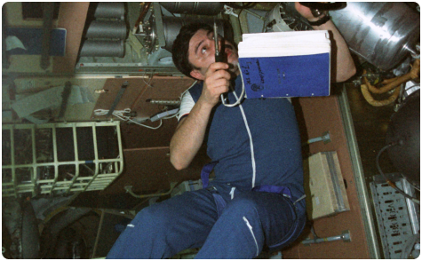
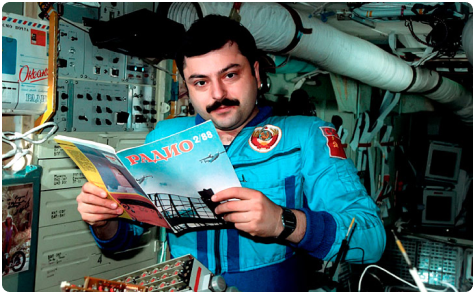
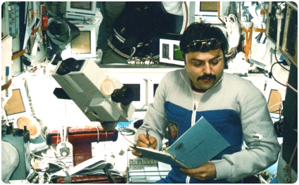
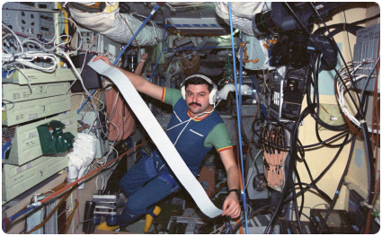
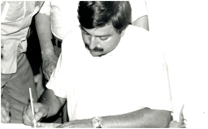
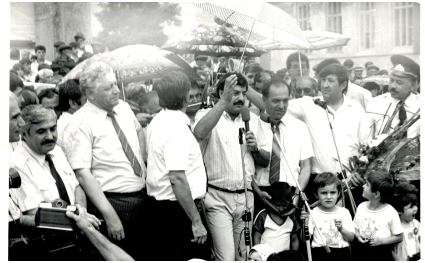
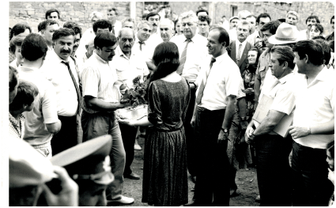
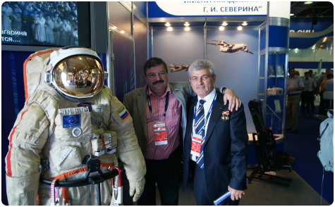

Муса
Манаров
Лётчик-космонавт СССР, полковник запаса, Герой Советского Союза. Заслуженный мастер спорта СССР.
Муса Хираманович Манаров родился 22 марта 1951 года Баку, республика Азербайджан.
По происхождению – лакец, однако в семье преимущественно общались на русском. Рос Муса в семье военнослужащего Манарова Хирамана Мусаевича, участника Великой Отечественной войны. Мама – Манарова (Маршаева) Асват Абдуловна, занималась хозяйством. Помимо Мусы в семье была его сестра Маина, впоследствии ставшая инженером. Как это часто бывает с семьями военных – Манаровым часто приходилось переезжать – Москва, Харьков (где Муса пошел в первый класс), Алатырь. Ещё в школе Муса увлекся радиотехникой, собирал и разбирал приемники, паял. Из школьных предметов больше всего его интересовала физика.

В 1968 году, окончив с золотой медалью школу в городе Алатырь, он поступает в Московский авиационный институт на факультет радиоэлектроники летательных аппаратов и уезжает в Москву. Помимо учебных занятий в университете Манаров активно занимается спортом.
В 1974 году Муса с отличием заканчивает институт, получив специальность инженера-радиотехника. Начинает работать инженером по специальности, поскольку по-прежнему больше всего его интересует радиотехника (впоследствии даже на станции «Мир» он не оставит своего увлечения и первым выйдет на любительскую радиосвязь из космоса). Но судьба распорядилась иначе, и высококлассные знания, полученные в годы обучения в институте, пригодились в космонавтике.

С 1974 по 1978 гг. Муса работает инженером в научно- производственном объединении «Энергия», где основной его задачей будет анализ бортовых систем по телеметрии (средства, обеспечивающие передачу, прием, переработку и регистрацию сигналов). В советское время среди инженеров связанных с космической промышленностью периодически проводили отбор в отряды космонавтов. В 1978 г. Манаров тоже подает заявление и проходит в отряд. С этого момента его жизненный путь будет вести к полету в космос. Подготовка длилась долго, менялись команды и проекты, в которых он участвовал. Только спустя 9 лет, 21 декабря 1987 года Муса наконец-то отправится в космос. Все эти годы шла тщательная работа по подготовке к полету, успеет Манаров побывать и в команде, которая готовилась по программе «Буран». Затем будет в составе дублирующего экипажа для станции «Салют-7». Но попадет Манаров уже только на новую орбитальную станцию «Мир» в составе основной экспедиции 21 декабря 1987 года, где пробудет 365 суток и 23 часа, установив очередной мировой рекорд по длительности непрерывного пребывания в космосе.


Сразу по прилету на Землю 21 декабря 1988 года ему присвоят звание Героя Советского Союза, вручат орден Ленина. В 1989 году он будет удостоен звания Заслуженный мастер спорта СССР.
Нужно отметить, что Муса Манаров – первый и пока единственный лакец и дагестанец-космонавт, и потому является особой гордостью для своего народа и всей республики Дагестан. По прилету он отправится в турне по городам и селам республики, где его будет ждать бурный прием. В селе Кумух откроют музей его имени. В 1991 году на территории республики Дагестан установят памятник единственному лакцу-космонавту.



Ещё за несколько лет до отправки в космос Муса Манаров женится на Шугаевой (Манаровой) Наиле Шугаевне (по профессии врач). У них родятся дети – дочь Наида (1980 г.) и сын Заур (1981 г.). Семья будет проживать в Москве.
После своего второго полета (2 декабря 1990 – 26 мая 1991 г.) Манаров некоторое время ещё будет участвовать в подготовке других космонавтов на Земле. 23 июля 1992 года выйдет на пенсию по выслуге лет и покинет отряд космонавтов.
После 1991 года займется бизнесом и общественно-политической деятельностью. Успеет побывать народным депутатом РСФСР от 94 Дербентского национально-территориального округа в период 1990 – 1993 гг. В декабре 1995 года баллотировался в Государственную Думу России II созыва от экологического движения «Кедр», но избран так и не был.
В 1992 – 1995 гг. будет занимать пост генерального директора ТОО «МКОМ». С 1995 года – директор ЗАО «Выделенные интегральные сети». Среди прочего, Манаров также занимал пост вице-президента Московской федерации джиу-джитсу и кобудо.
